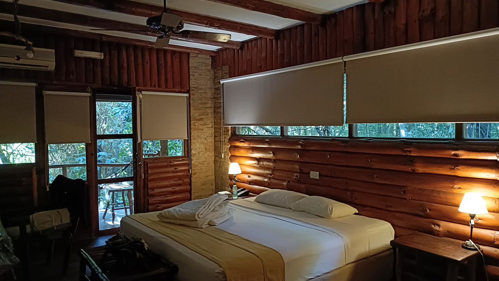
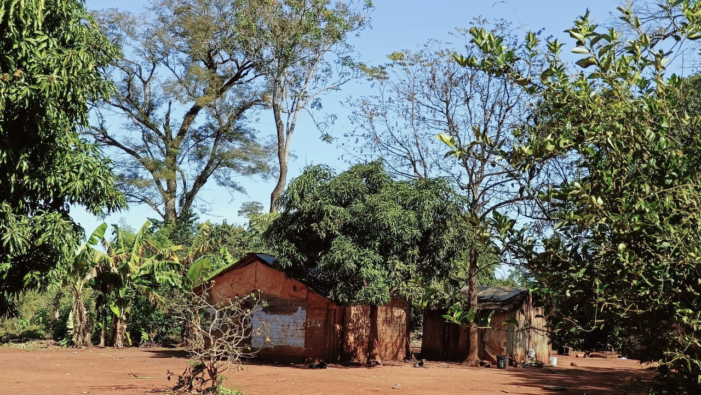
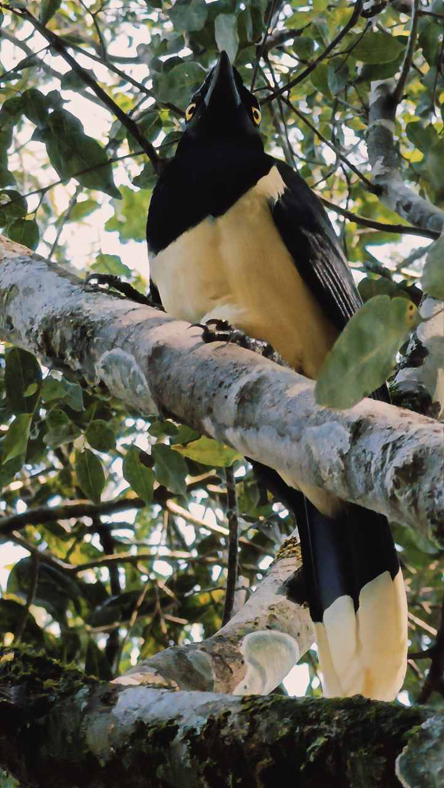
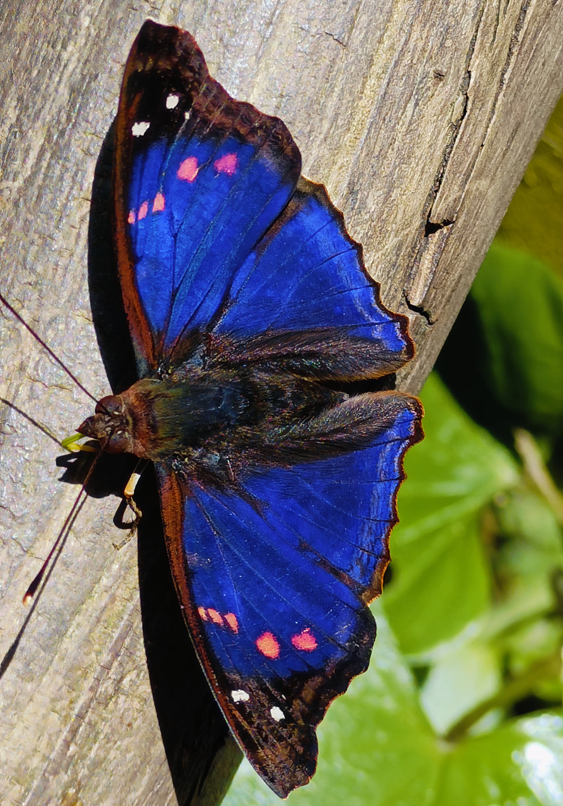

At half past four in the morning, unable to get back to sleep, I opened a chat on my phone. For some time I had been in the habit of using the app as a kind of talking notebook: for work, translation, thinking things through, but also to put my thoughts in order while travelling. What did I have to say at such an unusual hour—wrapped in the milky darkness of the room and flushed with a low-grade fever that seemed like nothing much but had refused to leave me for days—other than to give voice to my unease?
I lay still for a moment, straining to catch the slightest sound around me. The uncanny silence of the daytime had given way to a web of sounds barely distinguishable from one another. Heavy drops fell from the highest branches and pattered against the thick foliage of the undergrowth; tiny creatures buzzed beyond the mosquito screen; others—birds?—gave muted cries. None that I could connect with anything familiar.
Then I made a quick inventory of my physical condition: the temperature I had no way of taking, the throbbing at my temples. Should I get up and take the last Doliprane tablet I had left, or save it for an emergency? I coughed and cleared my throat and, rather than speak, whispered into the phone, afraid of breaking the perfect isolation in which I found myself.
Morning came and everything was different. A greenish aquarium light filtered through the windows and streaked the log walls. Cool, damp air from the night’s rain breathed through the mosquito screen. I was drenched in sweat, but the fever had gone. The headache and burning in my throat had also greatly subsided. I reached for my phone: on the screen were the few fragmented sentences I had dictated during my feverish outpouring. They broke off with the word:

Осторожно.
“What the hell is a Russian word doing here?” I typed.
“You’re the one who said it,” came the instant reply from the “notebook.” “Though I doubt you deliberately typed it in Russian at half past four in the morning in the Misiones forest (smiley face).”
I asked what it meant: something like “careful,” “with caution.” By then I was feeling much better, certainly less achy, but my voice was so dreadful that, I thought, the app’s speech recognition might conceivably have mistaken it for Russian. The idea that my nocturnal dictation had spontaneously produced a Russian word meaning “careful” during a night spent worrying about my health was so absurd as to sound invented.
There was something else. After dinner I had felt like watching The Mission again on my laptop, and its theme had echoed in my head for a long time while I lay awake. The scene of the climb, accompanied by the thunder of the waterfalls—in reality barely ten miles away as the crow flies—had played obsessively through my feverish mind.
I boiled some water and left the yerba mate to steep to soothe my throat. Then I got ready and stepped out of my bungalow into a morning dripping from every glossy xanthosoma leaf. It was June, close to the winter solstice in the Southern Hemisphere. Gone were the bitter mornings of Buenos Aires, which I had left only the day before; this was more like a bright day in May.

Осторожно. That word, I reflected as the taxi drove through the Misiones forest, might be telling me to distrust first impressions. The fever, after all, had vanished. It had left me exhausted, yet willing to venture out. I thought of the hotel restaurant, whose intrusive background music had put me off, but where I had been served an expertly grilled surubí—that delicacy from the Paraná River basin—the night before. Then there was Puerto Iguazú itself, a destination I had kept in reserve till the last moment.
Through the taxi window I caught sight of Guaraní families: boys riding motorbikes, others playing football in the shirts of famous clubs, outside huts fitted with satellite dishes. The taxi driver left me at the entrance to the falls, after lavishing paternal advice on me about which trails to avoid if I was not to exhaust myself.
Осторожно. Cautiously, then, I set off along the walkways above the extraordinarily still waters of the Río Iguazú. On each island in the delta I stopped and sat beneath the woven canopy of cupay, ceibo and ingá trees, bromeliads clinging to the dripping branches. In daylight the forest lost some of its unsettling mystery. Now the sounds around me—discernible above the distant rumble of the great falls—belonged to the continuo of insects, to curious black-and-yellow birds, to plump creatures with long bushy tails and, as I drew closer to the maelstrom, to other dark birds, small sharp shadows slicing through the white cloud, utterly indifferent to the solemn roar that swallowed everything.

Until then, I had taken my time, pausing at every murmur. Then, the walls of water. I stepped into a silent, shouting crowd of raised screens, letting the spray claim my hair, clothes, and shoes.
I revived myself with a providential bowl of lentil soup and set off again along the walkways anchored to the living rock of the precipice, the metal beneath my feet vibrating with every step: above me, the green ceiling of the forest spilling down the walls; below, the churning river.
A butterfly of an impossible blue fluttered around the feathery fronds of a slender palm and came to rest on the reddish bark of a tree.

Осторожно. A much wiser word than it had seemed last night. It had acquired a meaning no dictionary could contain: no longer simply be careful, but something closer to proceed, but know that you are vulnerable.
Photos and video by Francesco Bianchini.